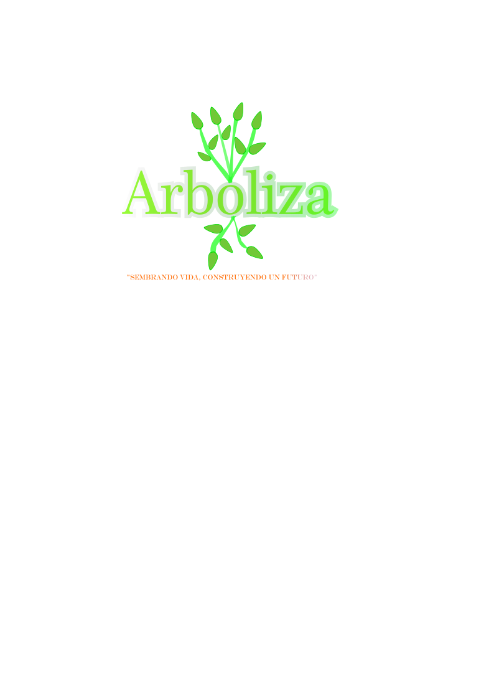
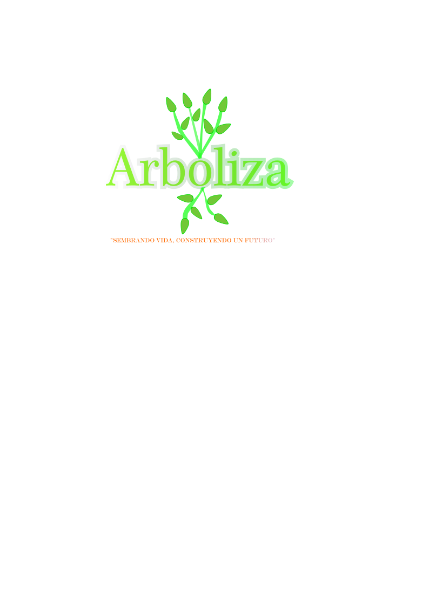

15 de junio 2025: Jornada de reforestación en zona escolar de Ixtlahuaca.
22 de junio 2025: Limpieza y preparación del terreno comunitario.
29 de junio 2025: Siembra de árboles (principalmente pinos).
15 de julio 2025: Primera visita de riego y revisión del estado de los árboles.
15 de agosto 2025: Registro fotográfico del crecimiento inicial.
Septiembre 2025: Actividad de limpieza de maleza alrededor de los árboles.
Octubre 2025: Colocación de etiquetas con los nombres de los grupos que sembraron.
Noviembre 2025: Taller educativo sobre cuidado del medio ambiente y árboles nativos.
Seguimiento del Crecimiento de Nuestro Árbol
Mes 1: Riego dos veces por semana y monitoreo de brotes nuevos.
Mes 2: Observación de hojas nuevas, limpieza de maleza y revisión de raíces expuestas.
Mes 3: Medición del crecimiento y toma de fotografías.
Mes 6: Actividad de reflexión grupal sobre el impacto ambiental logrado.
Mes 12: Celebración del “Primer Año Verde” y creación de una galería de imágenes del proceso.
 
pagina de reforestacion

pagina de reforestacion